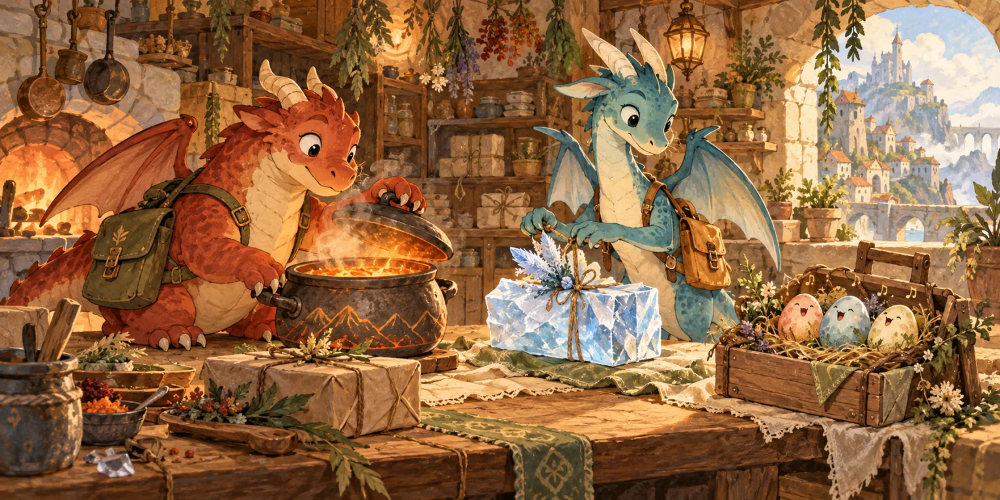

D1停在节点：待机浮动（两条龙错峰）3s 循环，位移 ≤5px，倾斜 ≤1.4°
就是你素材库里的龙：ember-v1.webp（赤陶红地面龙）与 gale-v1.webp（尘青天空龙），512×512、透明底，直接当作地图精灵用，缩到约 80px。触发：停在任一节点时常驻，两条龙错峰 0.6s，避免整齐划一地"共振"。
分支 feat/game-animations未写入正式代码上一版我用手绘骨架把你的龙图案换掉了，是我的错。这一版：① 地图上直接使用你的 ember-v1.webp / gale-v1.webp（512×512 透明通道全身龙），动作只加在图上、不改画法；② 现有那枚小标记保留原画路径一字不改，只加动作。点每张卡「重播」，或顶部「全部重播 / 自动循环」。
就是你素材库里的龙：ember-v1.webp（赤陶红地面龙）与 gale-v1.webp（尘青天空龙），512×512、透明底，直接当作地图精灵用，缩到约 80px。触发：停在任一节点时常驻，两条龙错峰 0.6s，避免整齐划一地"共振"。
触发：一回合里龙从 A 走到 B。做法：offset-path 走真实边（直线 / 水渠 / 天空道各不相同）＋offset-rotate:auto 让龙头朝飞行方向，替代现在"起点→终点直线平移"的临时 overlay。龙图本身不裁不拉伸。
触发：抵达节点。做法：垂直方向压弹（squash & stretch）+ 一圈尘环；龙图只是被整体缩放，不变形到失真。
触发：取货 / 送达。做法：龙低头"啄"一下，货物同时跳到龙身上（现有 dispatch-parcel-arrival 只做了货物到场，没做龙自己的动作）。
触发：回合耗尽 / 被拦下。做法：短促抖动 + 龙图去饱和变暗 + 橙环扩张；不做全屏红闪。
触发：三条货按时送达并回到厨房。做法：两条龙错峰 90ms 起跳，与现有彩带同时放；现有 .dispatch-result-art 的旋转庆祝保留。
说明：路径、颜色、白描边、眼睛、字母全部沿用 dragonGlyph() 原样，只是让整枚标记按扇翅节奏轻微起伏。不需要把翅膀拆开、也不发明任何新形状——上一版正是这里做错了。
触发：抵达节点。做法：整体压弹，配合现有 dispatch-dragon-arrival 用或替换它。
触发：动作被拒（水渠涨水 / 体力不足 / 超载）。
触发：通关。与现有彩带同时。

 选龙卡 / 龙档案卡
选龙卡 / 龙档案卡触发：常驻。
触发：该龙本回合移动 / 送达 / 取货。说明：都用你的龙图整体变换，不裁切不变形。
选中（抬头 + 8%）→ 被拒（抖动）触发：点选龙 / 动作被拒。

触发：调度首屏与首页特色卡。
| 编号 | 动作 | 触发 | 时长 |
|---|---|---|---|
| D1 | 你的龙图停靠待机浮动（错峰） | 停在节点（常驻） | 3s 循环 |
| D2 | 沿真实道路曲线飞 + 朝向跟随 | 回合执行 | 2.2s |
| D3 | 落地压弹 + 尘环 | 抵达节点 | 0.66s |
| D4 | 低头啄 + 货跳上背 | 取货 / 送达 | 0.72 / 0.78s |
| D5 | 抖动 + 去饱和 + 警示环 | 失败 / 超时 | 0.55s |
| D6 | 两龙错峰跳跃 | 通关 | 0.82s |
| M1–M4 | 原小标记：起伏 / 落地 / 抖动 / 欢呼（原画不改） | 常驻 / 抵达 / 被拒 / 通关 | 1.3s / 0.6s / 0.55s / 0.8s |
| E1–E3 | 卡片龙：呼吸 / 小跳 / 俯冲 / 压缩 / 选中 / 抖动 | 常驻 / 移动 / 送达 / 取货 / 选中 / 被拒 | ≤3.4s |
| F1 | 首屏大图极缓漂浮 | 常驻 | 4.6s 循环 |
所有动作只做整体位移 / 缩放 / 倾斜 / 去饱和，不裁切、不变形你的龙图，也不新画任何形状；全部沿用你现有的 clearMotion() 与 prefers-reduced-motion 降级（系统开启"减弱动态效果"时，常驻项一并关闭）。